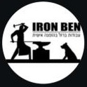

ארבע אפשרויות. השם נשאר. כל סימן הוא SVG, עובד בכל גודל, על כהה ועל בהיר, וכאייקון אפליקציה. בכל אפשרות: הסימן בגדול, קטן על בהיר, ואייקון.

עיגול לבן, "IRON BEN" בגופן כבד, נפח עם פטיש על סדן בסגנון קליפ-ארט. הדמות קטנה מדי בגדלים קטנים, והסגנון שייך לשלט של מסגריה ולא לסטודיו שאדריכלים מזמינים ממנו.
ריבוע חותמת ברזל, כמו הצריבה שאתם שורפים בעץ בסדנה. השם חרוט במרכז, שתי פינות נשרפות קלות. בטעינת האתר הסימן "נטבע" (תנועת הטבעה קצרה). עובד כאייקון אפליקציה בלי שינוי.
מתאים כשרוצים חיבור ישיר לסדנה ולחתימה על כל עבודה.
ה-I הוא חתך של קורת ברזל (I-beam). ה-B בנוי משני פרופילים מכופפים עם מילוי עץ בגוון אלון. השם מתחת או לצד. הכי "אדריכלי" מהארבעה, קריא גם ב-16 פיקסלים.
מתאים אם רוצים סימן שעומד לבד בלי טקסט, לפייבקון, לחותמת מייל ולשלט.
וורדמארק נקי בגופן הקונדנס של האתר. בין IRON ל-BEN עובר תפר ריתוך: קו מנוקד של "סולם" ריתוך. בריחוף התפר נדלק בכתום גחלת. השם הוא הלוגו, התפר הוא הסיפור.
מתאים אם רוצים לוגו טיפוגרפי שמרגיש כמו האתר עצמו. פחות חזק כאייקון קטן.
שומר על הסדן מהלוגו הנוכחי, אבל כצורה גיאומטרית אחת: שלושה מלבנים וקשת, בלי דמות ובלי פרטים קטנים. השם מתחת. מי שמכיר אתכם מזהה, מי שלא, רואה סימן מודרני.
מתאים אם חשוב לשמור המשכיות עם מה שהלקוחות הקיימים מכירים.